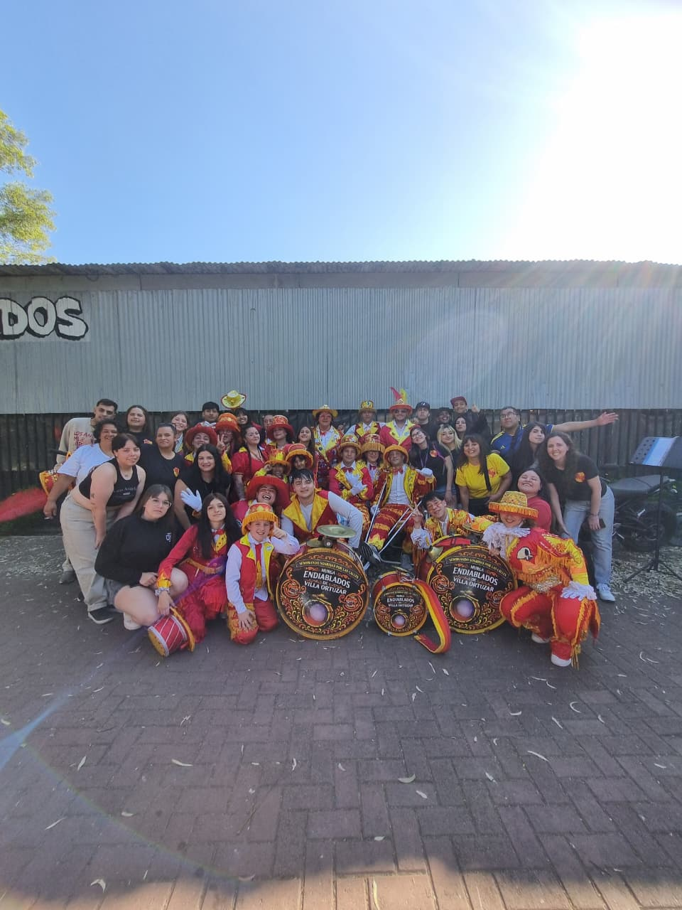
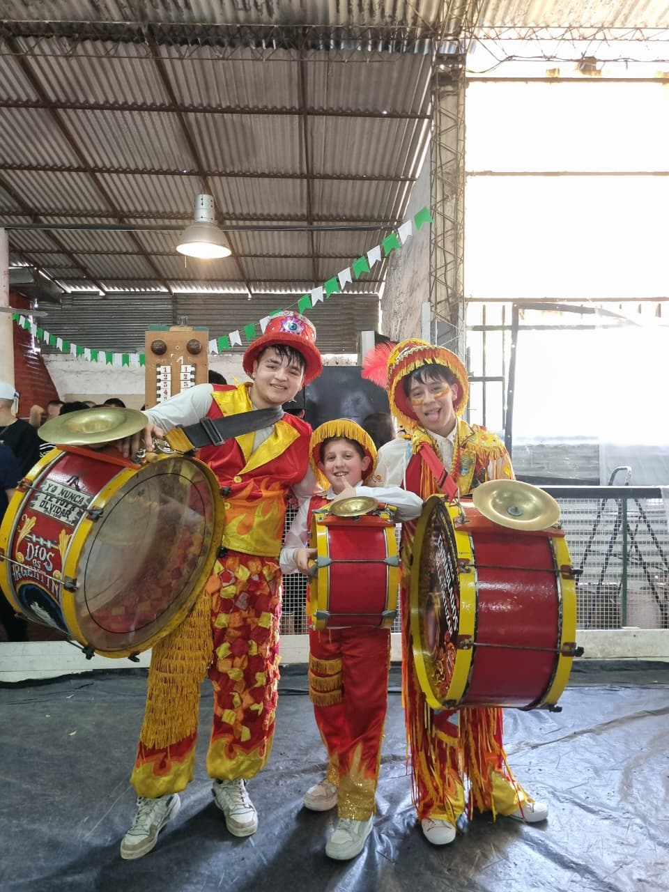
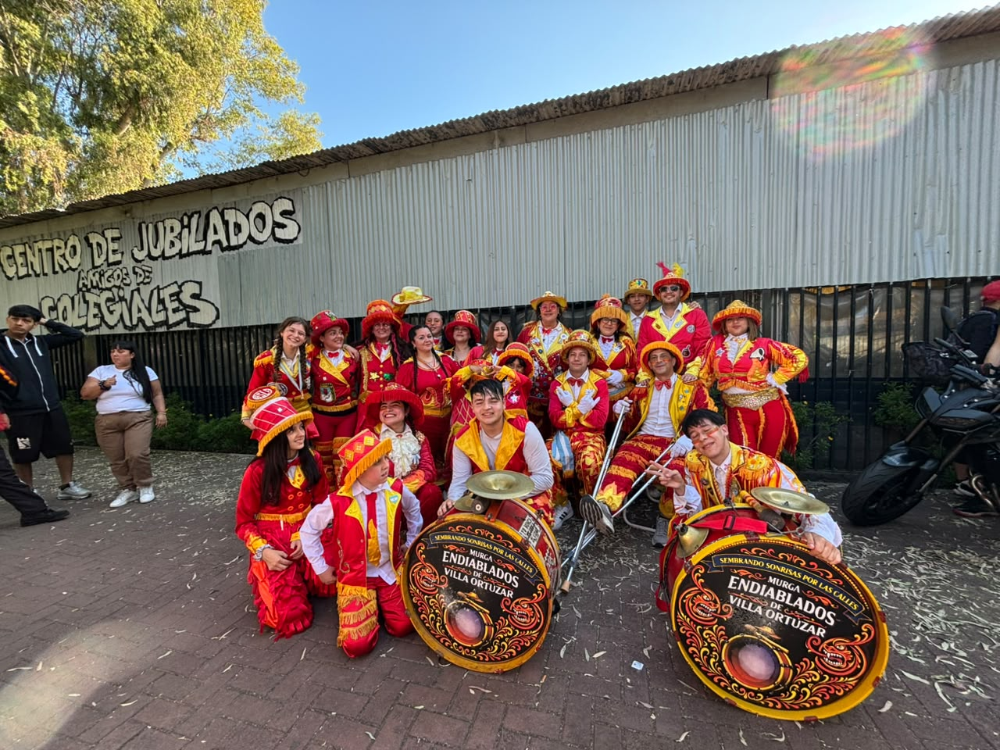
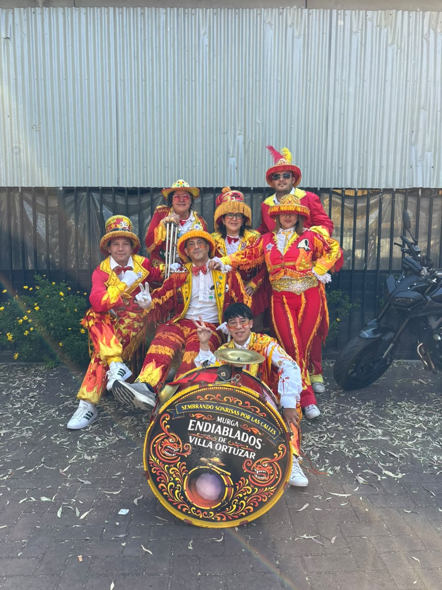
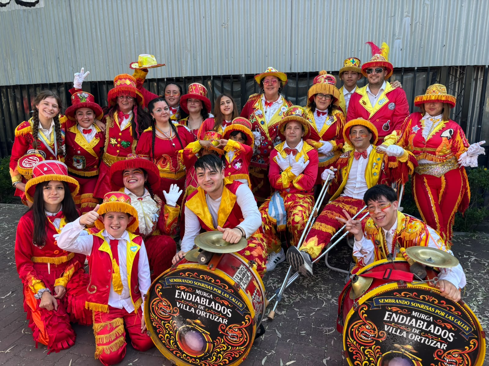

Noche a puro carnaval en la Peña Cachafaz
Domingo 8 de noviembre de 2026 • Peña Cachafaz
El pasado domingo 8 de noviembre, el Centro Murga Los Endiablados de Villa Ortúzar dijo presente en la Peña Cachafaz para compartir una tarde inolvidable de música, folcklore, baile, murgas y encuentro popular.
Desde la entrada a puro bombo y platillo, el rojo, amarillo y naranja encendieron la pista. Entre glosas, canciones y el despliegue de nuestros bailarines y mascotas, la murga compartió con el público toda la energía que venimos preparando ensayo tras ensayo en nuestra casa la plaza 25 de Agosto en Villa Ortúzar.
Estas salidas fuera de febrero son fundamentales para seguir fortaleciendo los lazos culturales, compartir escenario con otros proyectos y llevar la identidad del carnaval porteño y de Villa Ortúzar a nuevos espacios. Agradecemos de corazón a toda la organización de la Peña Cachafaz por la invitación y la calidez, y a cada vecino y amigo que se acercó a hacer el aguante.




